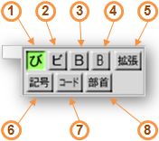

CannaIM is a Japanese input method add-on for Haiku. It is based on UNIX input method 'Canna'.
CannaIM は、Haiku 用日本語入力用のアドオン (インプットメソッドアドオン) です。Unix のインプットメソッドである’Canna’を元にしています。
CannaIM was originally developed by M.Kawamura for BeOS. He contributed source code to the Haiku project in 2004, since then Canna was distributed part of Haiku. In 2014, Due to developing problem, it was outsourced from the project and has been maintained at GitHub. Kana to Kanji dictionaries are also maintained at GitHub.
CannaIM は、河村さんにより BeOS 用に開発され、 2004 年に Haiku プロジェクトへソースコードが寄付されて、Haikuの一部として配布されてきました。2014年に、開発上の問題からHaikuプロジェクトから分離し、ソースコードは、Github にて保守されています。同様に、かな漢字変換用の辞書も GitHub で保守されています。
If you prefer building CannaIM from source or don't want to use Haikudepot, download source code from https://github.com/mt819/Canna-Dictionary/archive/master.zip then unzip and run 'sh install.sh' in Terminal.
ソースからビルドする場合、または、HaikuDepot を使いたくない場合は、ソースコードを https://github.com/mt819/Canna-Dictionary/archive/master.zip からダウンロードして展開後、ターミナルから sh install.sh を実行してください。
If you install CannaIM without HaikuDepot (using install.sh above), delete files / folders bellow:
HaikuDepotを使わずインストールした場合（上記のinstall.shでインストールした場合）は、以下のファイル、フォルダーを削除してください。
Tapping Alt + Space toggles CannaIM.
Alt + Spaceキーで、CannaIM のオン / オフを切り替えます。
CannaIMがオンになっていると、以下のウィンドウが表示されます。
When CannaIM is on, below window appers.

Here is a brief note for CannaIM window.
以下はウインドウの簡単な説明です。
Below shows standard key bindings.
標準のキー配置を以下に示します。
| Alt + Space | Toggle input methods. After changing to Canna, then input some Ro-ma ji text (ex. nihongonotesuto), then press space to start conversion. インプットメソッド (入力方法) を切り替えます。Canna に変更後ローマ字で入力し、スペースを押すと変換を開始します。 |
| Space |
Select current phrase (Red background text) conversion candidate 現在の文節（赤い背景で表示されます）の変換候補を選択します。 |
| F6 |
Change current phrase to Full width HIRAGANA 現在の文節を全角ひらがなに変換します。 |
| F7 |
Change current phrase to Full width KATAKANA 現在の文節を全角カタカナに変換します。 |
| F9 |
Change current phrase to Full width Alphabets. 現在の文節を全角アルファベットに変換します。 |
| Right arrow |
Expand current phrase. 現在の文節を拡張します。 |
| Left arrow |
Shrink current phrase. 現在の文節を縮小します。 |
| Up arrow |
Cycle current phrase (HIRAGANA/KATAKANA/KANJI/Alphabet). 現在の文節の字種を変更します(ひらがな→カタカナ→漢字→アルファベット→)。 |
| Down arrow |
Ends current phrase conversion and move to next phase. 現在の文節の変換を終了し、次の文節に移動します。 |
| Return |
Ends conversion. 変換を終了します。 |
| ESC |
Cancel conversion. 変換をキャンセルします。 |
For more imfometion, see default key binding file: /boot/system/data/Canna/default/just.canna